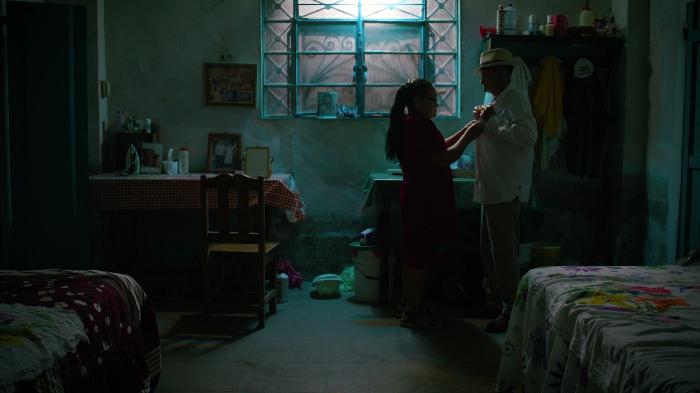
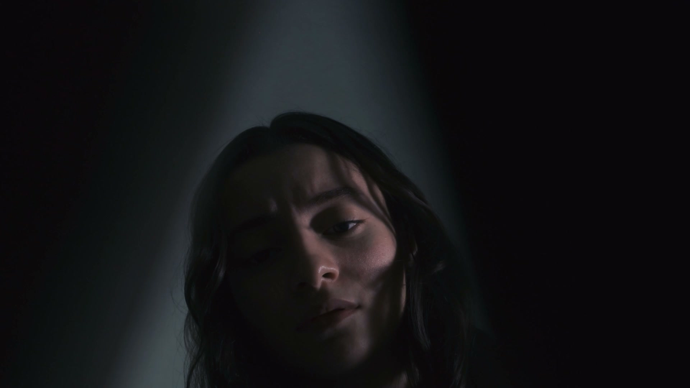
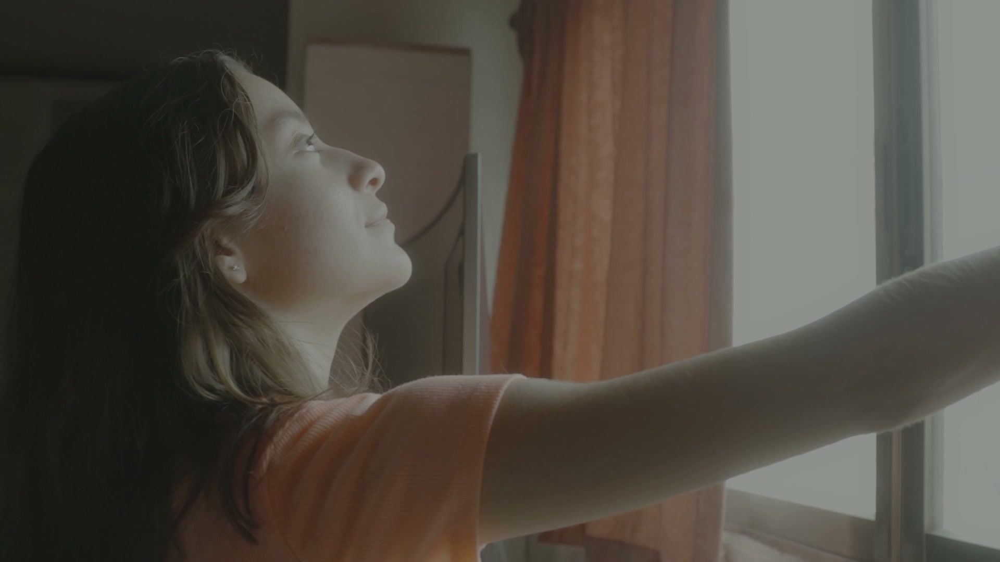

11 / LIVE-ACTION CINEMATOGRAPHY
Cinematography
Showreel.
Light, framing and movement in live-action storytelling.
/ FEATURED REEL
Cinematography in motion.
/ OVERVIEW
A camera-led approach to light.
This reel brings together live-action work from my practice as a director, cinematographer and camera operator. It moves between exterior daylight, window-lit scenes and darker portraits, showing how direction of light and framing shape the feeling of a shot.
My experience behind the camera informs my CG lighting work: I look for motivated sources, clear subject separation and a consistent visual mood across a sequence.

Golden-hour portrait
A warm backlight gives the subject a clear silhouette. Frame from the supplied showreel.

Daylight interior
Cool window light and the darker room create depth around the figures. Frame from the supplied showreel.

Low-key portrait
A restrained pool of light draws attention to the face. Frame from the supplied showreel.

Window light
The bright opening separates the figure from a dim interior. Frame from the supplied showreel.
Role and reel credits
Joshua Medina · Director / Cinematographer / Camera Operator. A selection of live-action work presented as a single reel.